Published research · IEEE EECSI 2023
Discovering Pharmaceutical Molecules with GANs
A generative AI model that designs new drug-like molecules from scratch, published by IEEE and presented at the 10th International Conference on Electrical Engineering, Computer Science and Informatics.
The problem
Bringing one new drug to market takes around 12 years and about $2.6 billion. Much of that time goes into finding promising molecules to test. We asked whether a generative AI model could propose new, valid, drug-like molecules quickly and narrow down where chemists should look.
Data
- QM9, a standard benchmark of about 134,000 small organic molecules (up to 9 atoms of carbon, oxygen, nitrogen and fluorine).
- Each molecule is represented as a graph: atoms are nodes and bonds are edges, stored as an atom list plus a bond matrix.
How it works
- Takes random noise and turns it into a candidate molecule.
- A 3-layer neural network (128, 256, 512 units) outputs the atoms and the bonds between them.
- Looks at a molecule and judges whether it is real (from QM9) or generated.
- Uses graph convolution layers to read the molecule's structure.
- The two networks compete until the generator's molecules pass as real.
- Used a Wasserstein GAN with gradient penalty to keep training stable (batch size 32, learning rate 0.0001).
- Validity, novelty and uniqueness of the generated molecules.
- Drug-likeness (QED), solubility, synthetic accessibility and diversity.
Results
Benchmarked against two published models, MolGAN and ORGAN, after 300 epochs on a 5,000-molecule sample of QM9.
| Model | Validity | Novelty | Drug-likeness (QED) | Run time |
|---|---|---|---|---|
| MolGAN | 87.7% | 97.7% | – | – |
| ORGAN | 96.1% | – | 0.52 | 10.2 |
| Our GAN | 95.6% | 98.4% | 0.53 | 5.8 |
- 95.6% of generated molecules were chemically valid, well above MolGAN and close to ORGAN.
- 98.4% of valid molecules were new, meaning they did not appear in the training data.
- Matched ORGAN on drug-likeness in roughly half the run time.
Limitation: solubility scored lower than both benchmarks (0.38 vs about 0.54), likely due to mode collapse, where the generator keeps producing similar molecules.
Impact
The model shows that a GAN can reliably generate valid, novel, drug-like candidates, giving chemists a faster, data-driven starting point for deciding which molecules are worth testing in the lab.
Recognition
- Presented the paper at the 10th International Conference on Electrical Engineering, Computer Science and Informatics (EECSI 2023), Palembang, Indonesia, September 20–21, 2023.
- Published in IEEE Xplore (DOI 10.1109/EECSI59885.2023.10295896).
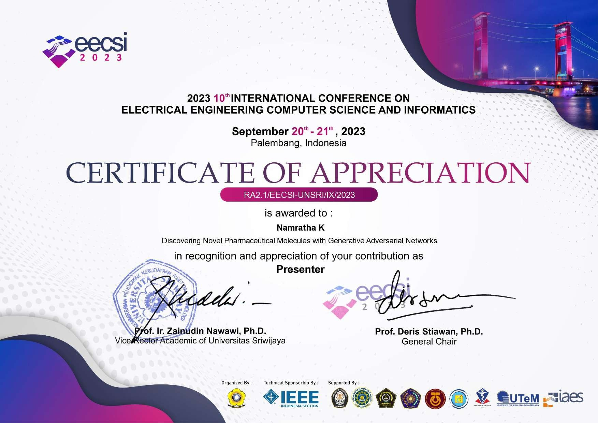
Certificate of Appreciation, awarded for presenting the paper. Click to open the full certificate.
Presentation
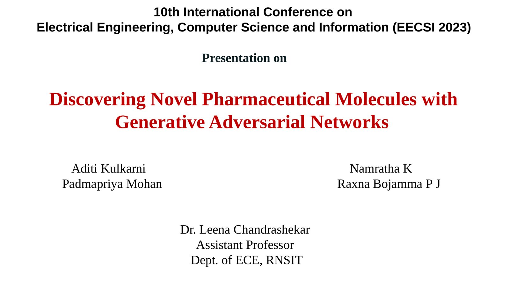
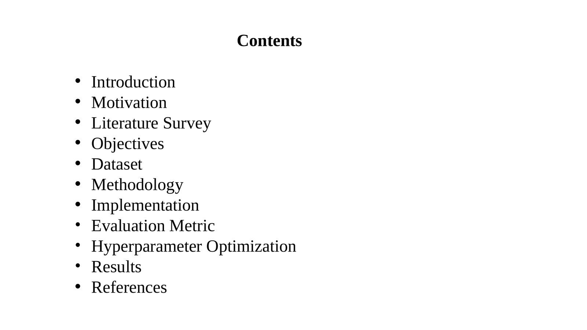
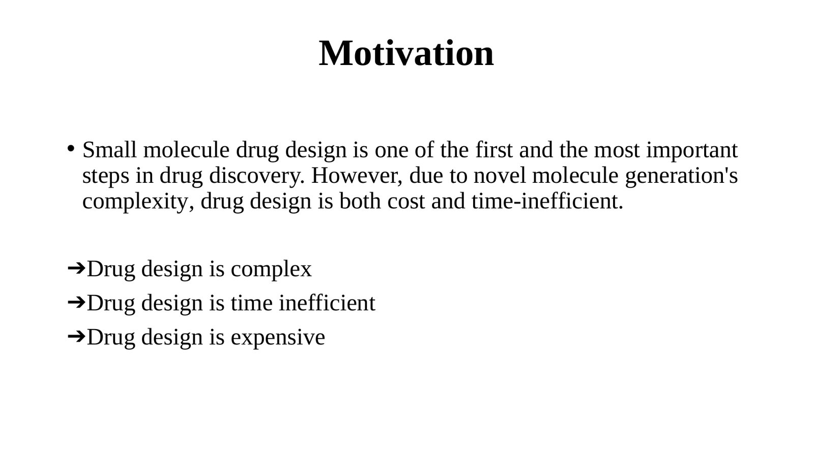
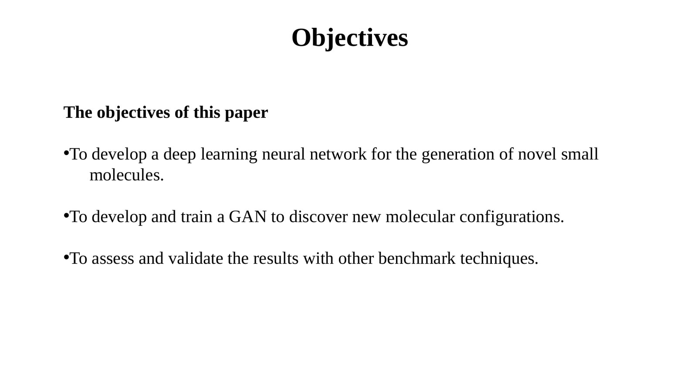
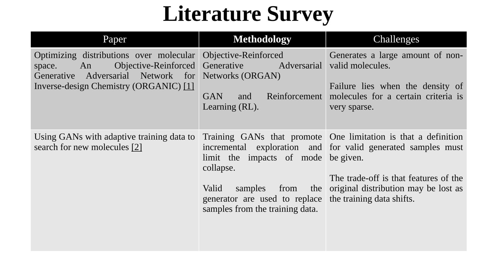
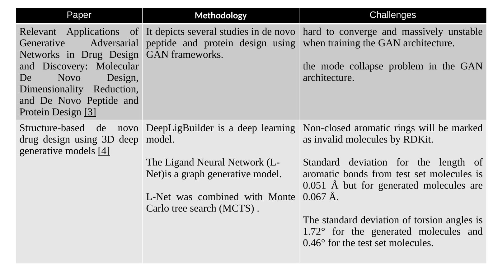
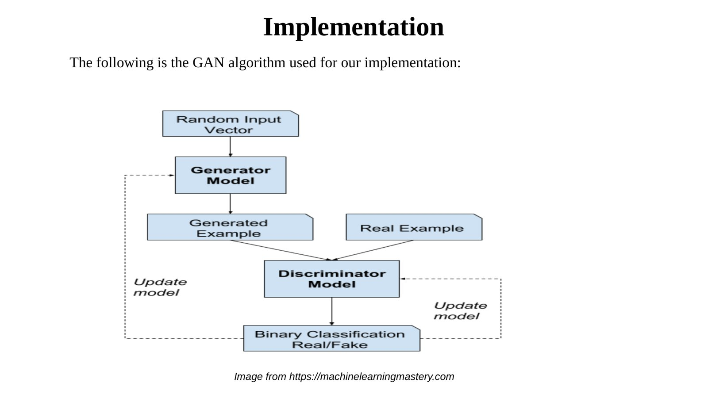
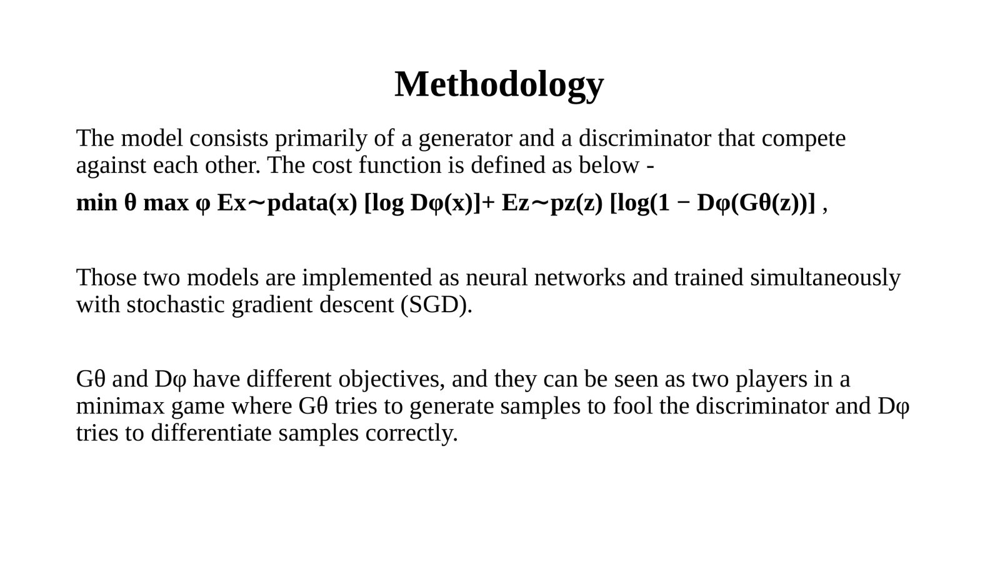
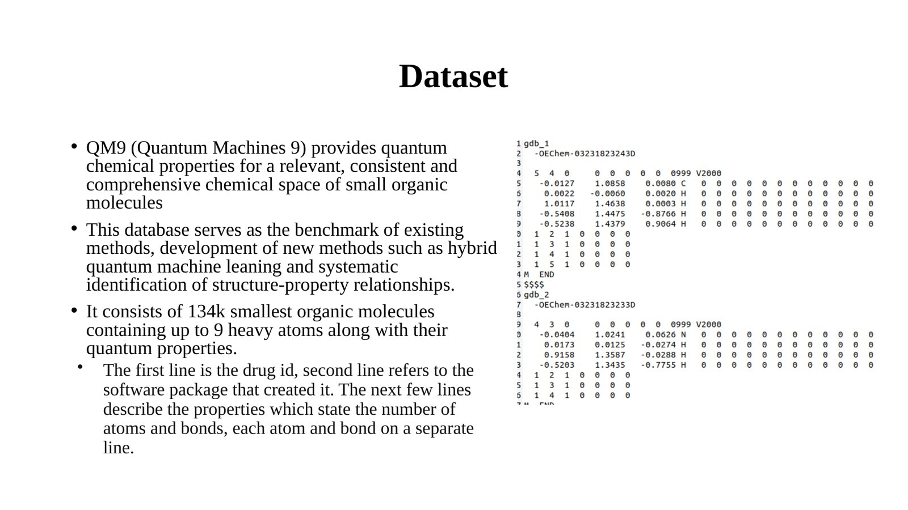
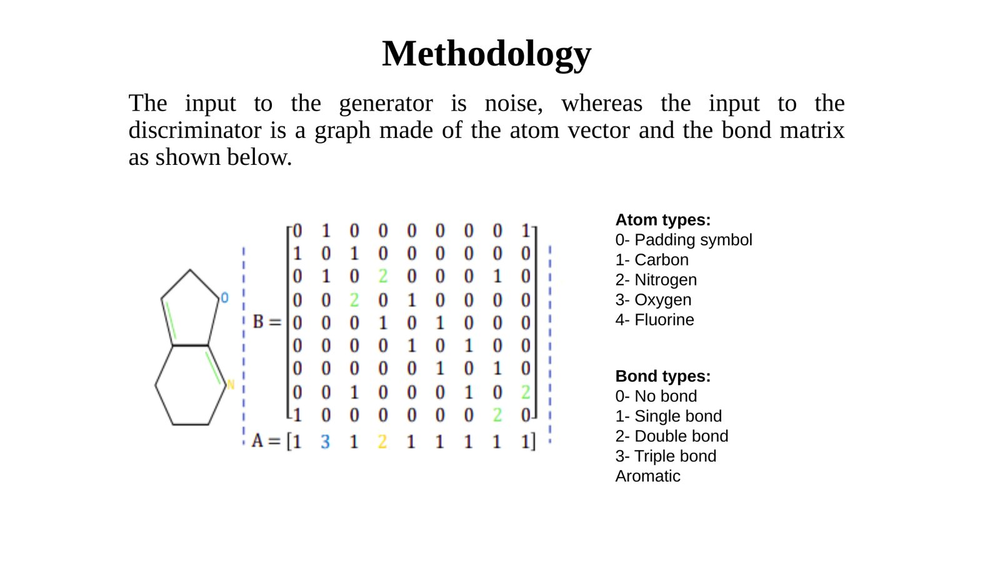
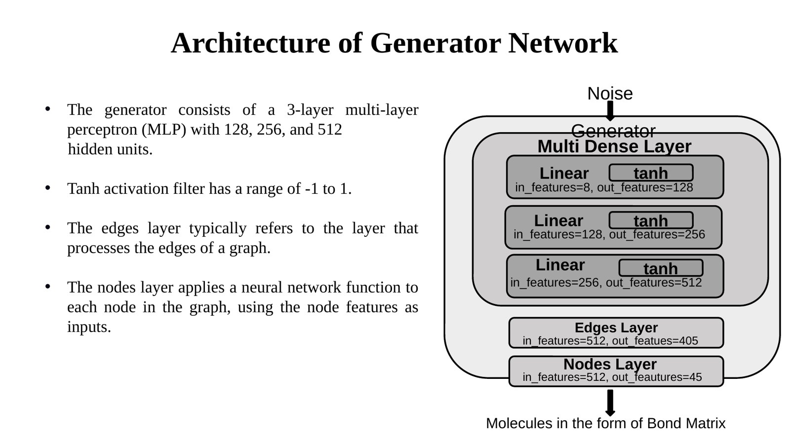
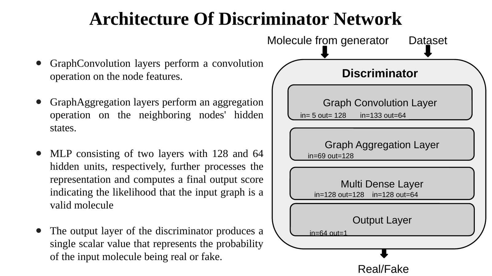
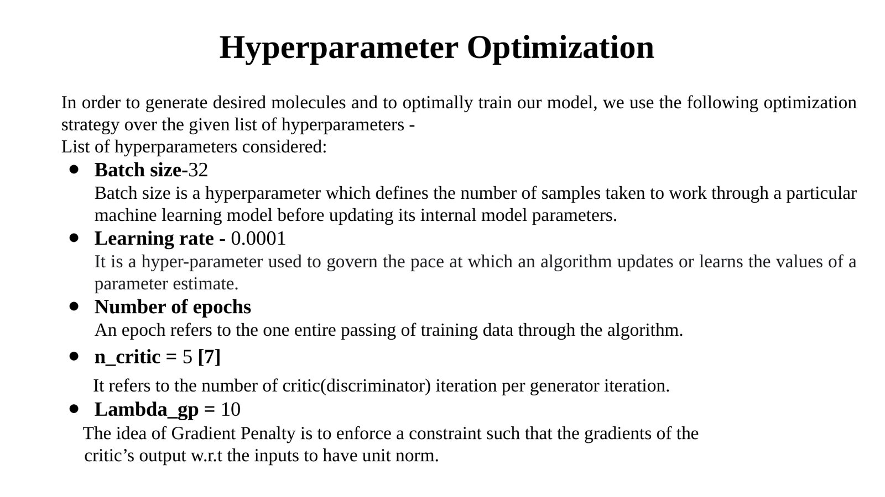
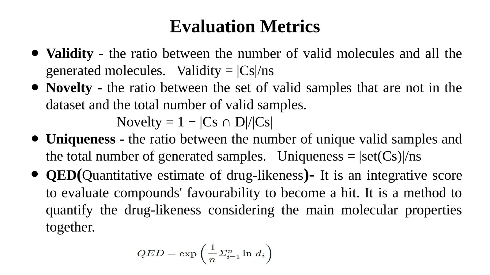
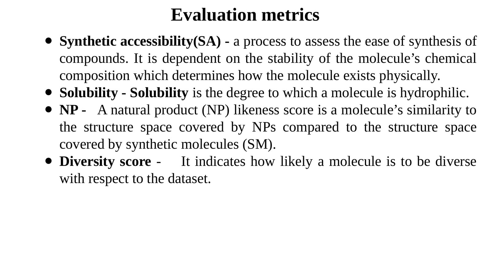
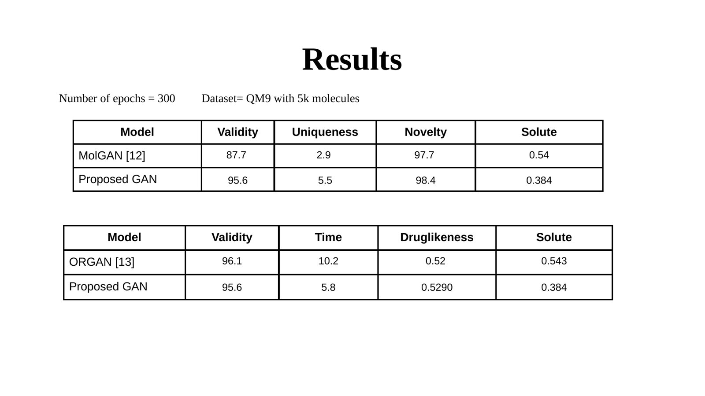
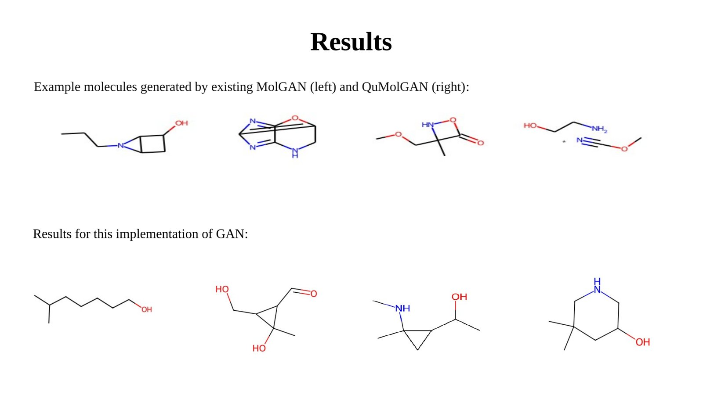